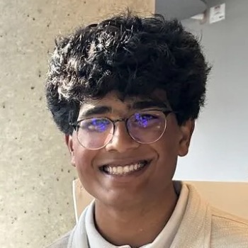

Bioengineering at the University of Maryland. Research at UMD, Johns Hopkins and George Mason.
Drag to turn it
An antimicrobial peptide proposed by a protein language model. I tested it under BSL‑2, where it killed 99.9 to 99.999% of drug‑resistant E. coli and P. aeruginosa.
Drag to turn it
Surgeons often judge by eye whether bone still has blood flow. My models read white‑light and fluorescence images instead, and flag the cases they shouldn’t be trusted on.
Drag to turn it
Adhesion, confinement and shear can each push a neutrophil to burst into a web of DNA. I’m building one model that links all three, then testing it at the bench.